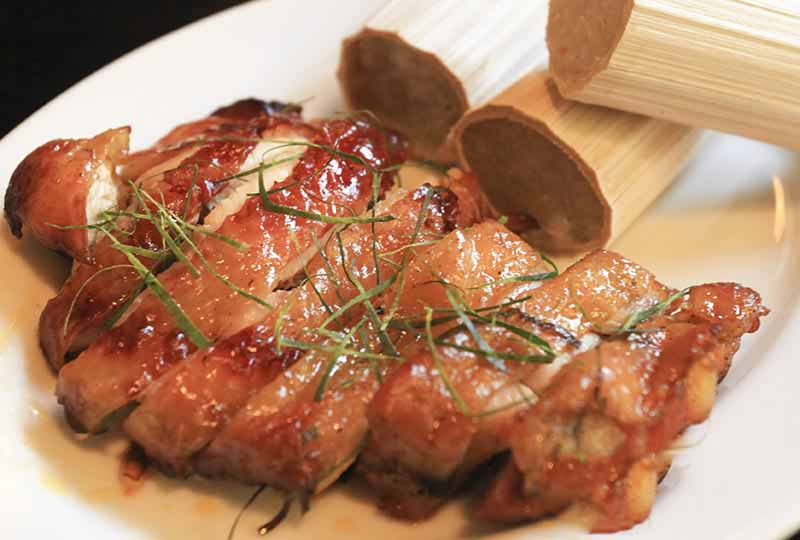

Cơm lam gà nướng
Giá :
98.000 đ
Cơm lam là đặc sản của các dân tộc thiểu số phía Bắc và Tây Nguyên. Người vùng cao trước kia khi đi rừng thường phải tìm ra cách chế biến, nấu cơm sao cho thật tiện lợi, thích nghi với hoàn cảnh.
Cơm lam gà nướng
, vì thế được nấu trong ống nứa, đốt trên lửa cho đến khi chín. Giữ nguyên hồn cốt của món này, các đầu bếp luôn lựa ống phải là những ống nứa tươi, hơi non. Ống nứa - sau khi đã nén đầy gạo - được vùi trong trong bếp lửa, khi nướng phải trở đều tay dậy mùi cơm, thơm từ nứa.
Nguyên liệu chính gạo nếp bọc trong ống tre tươi được đem nướng trực tiếp trên lửa hồng đến khi dậy vị thơm, thường ăn kèm với thịt gà nướng và vừng (mè). Khi thưởng thức cơm lam, thực khách sẽ không chỉ cảm nhận được vị ngọt của gạo nếp mới, mà còn phảng phất hương thơm của nứa. Cơm được bọc trong lớp màng lụa mỏng trắng ngà của ống, ăn cùng với muối vừng thịt nướng, hoặc gà nướng theo công thức riêng.